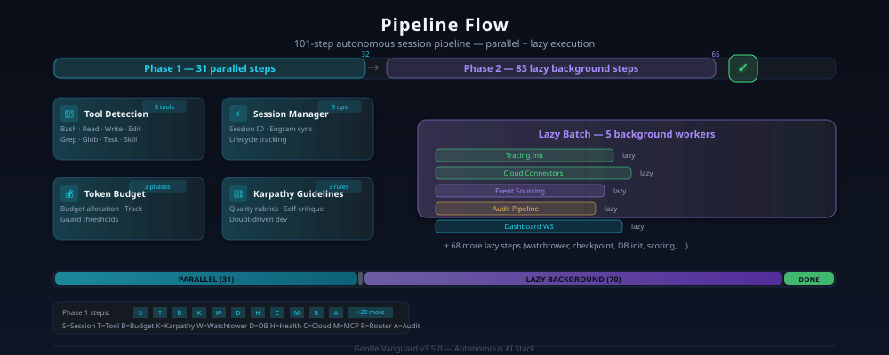

21 Specialized Agents · 105 Pipeline Steps · 175 Skills · 100% Autonomous Routing
Orchestrator + 20 specialized subagents with confidence-based routing
Orchestrator routes tasks based on confidence thresholds (≥80% direct, 60-79% with summary, <60% BA first), task type, and agent availability
| Agent | Code | Role | Confidence |
|---|---|---|---|
| Orchestrator | main |
Routes, coordinates, session lifecyclei | ≥80% direct |
| sdd-explorei | BA |
Requirements gathering, analysis, clarificationi | Fallback <60% |
| sdd-designi | SAD |
System design, API contracts, architecturei | ≥80% direct |
| sdd-applyi | DEV |
Code generation, feature building, refactoringi | ≥80% direct |
| sdd-verifyi | QA |
Testing, validation, quality gatesi | ≥80% direct |
| gov-agenti | GOV |
Compliance, security, policy enforcementi | ≥80% direct |
| ops-agenti | OPS |
Deployment, CI/CD, infrastructurei | ≥80% direct |
| doc-agenti | DOC |
Technical docs, ADRs, guidesi | ≥80% direct |
| session-agenti | Session |
State tracking, lifecycle managementi | ≥80% direct |
| premortem-agenti | Premortem |
Risk identification, failure predictioni | On demand |
| maintenance-agenti | Maintenance |
Cleanup, optimization, health monitoringi | ≥80% direct |
| self-diag-agenti | Self-Diag |
Auto-debug and break-glass recoveryi | ≥80% direct |
| sia-agenti | SIA |
Self-improving agent, iterative refinementi | ≥80% direct |
| gitflow-agenti | GitFlow |
Branch management, PR automationi | ≥80% direct |
| knowledge-agenti | Knowledge |
Knowledge base operations, vault managementi | ≥80% direct |
| explorei | Explore |
Fast codebase explorationi | ≥80% direct |
| generali | General |
Research and multi-step tasksi | ≥80% direct |
Confidence-driven task dispatching with intelligent fallback
High-confidence tasks are routed immediately to the appropriate specialized agent without summarization overhead
Fast pathTasks at moderate confidence include a context summary to guide the target agent and reduce ambiguity
Context-richLow-confidence tasks activate the BA exploration agent first to gather requirements before dispatching
Fallback trigger105 total config — 53 steps (31 Phase 1 parallel) · 70 lazy background
All Phase 1 steps execute concurrently at session start
Background batches of 5, non-blocking session initialization
From START through WORK to END — with full persistence and audit
cleanup-start creates files, resets counters, prepares session environment. Pipeline validates all prerequisites before allowing work.
Active session with tools, delegation, and code generation. Agents dispatched via orchestrator. Background tasks continue in lazy batches.
Orchestrator persists state, runs backup, performs cleanup. orchestrator (--lightweight) closes session with optional speed optimization.
Intelligent task distribution with parallel execution capabilities
Orchestrator decides based on confidence score, task type, and agent availability matrix
Task agents run with fresh context — or continued session via
task_id for multi-turn tasks
Multiple agents can run simultaneously for independent subtasks, maximizing throughput
263 skill files powering autonomous agent behavior
Each skill has a SKILL.md with instructions and
reference files defining agent behavior for specific tasks
Skill router matches task descriptions to skills. Session-start triggers 5 matching skills for auto-discovery and loading
Skills are auto-discovered and injected via the
skill tool — no manual selection required
Flujo completo del pipeline: fase de inicio, pasos paralelos y tareas lazy en background. Pasa el cursor sobre los nodos para explorar cada etapa.

105 pasos de configuración — 101 habilitados (31 Phase 1 paralelos + 70 lazy background en batches).